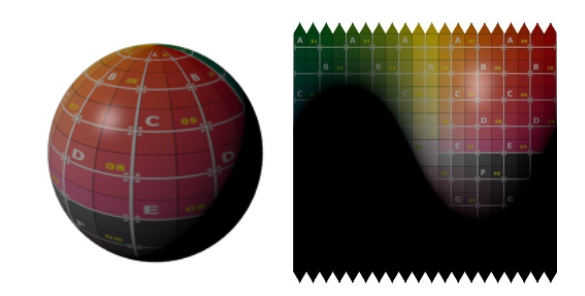
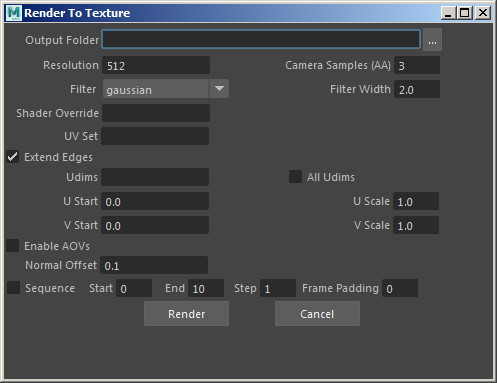
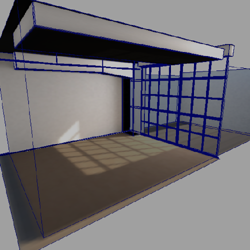
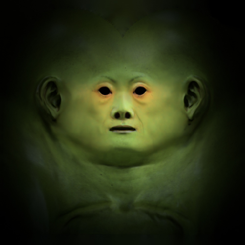

球体的着色、照明和纹理已烘焙并保存到纹理贴图
将照明、阴影、着色和纹理转化为可用作纹理贴图的单个文件纹理。
工作流如下所示：

工具将当前选择的内容渲染到纹理贴图所用的目标文件夹。
渲染到纹理贴图的图像的大小。
渲染到纹理时使用的抗锯齿质量。有关详细信息，请单击此处。
启用/禁用渲染使用选项 region_min_x、 region_min_y、 region_max_x、 region_max_y 指定的区域。
用于将各个子像素采样平均化到最终像素颜色的过滤器类型。有关详细信息，请单击此处。
选择子像素采样平均化过滤器的宽度（以像素为单位）。有关详细信息，请单击此处。
对于当前指定给要渲染到纹理的对象的着色器，为其指定一个不同的着色器。
选择要使用哪个 Udims。例如，0:0 2:0 0:1 1:1 2:1 3:1 0:2 1:2 或 1002 1004 1023 1024
渲染所有 Udims。
选择要烘焙的 AOV。渲染所有 AOV。
渲染帧序列。
|  |  |
| 将当前选择渲染到纹理的更多示例 |